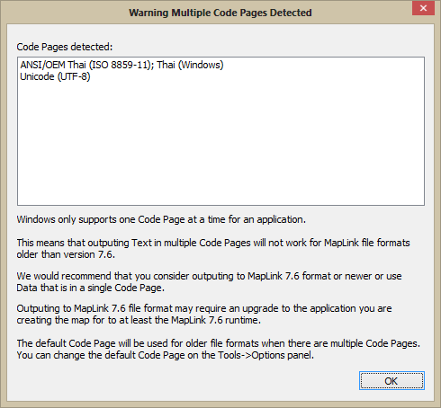

When you create a map and select a format older than 8.0, MapLink Pro Studio needs to perform a number of checks to make sure that creating the old map format will work and to let you know what the problems may be.
With previous versions of MapLink Pro Studio text was output in the Code Page it was read in. If text was read in multiple Code Pages then text was written out in multiple Code Pages. There was no way to tell which Code Page the text was in.
To deal with writing old map formats the approach has been taken that multiple Code Pages are not going to work because of the OS locale setting limitations. Therefore if an old map format is selected for output MapLink Pro Studio will check to make sure that all data has the same Code Page.
If the Code Pages are not the same then the following warning will be displayed:

If the Code Page is not the same the override Code Page will be used. See the Options Code Page Override.